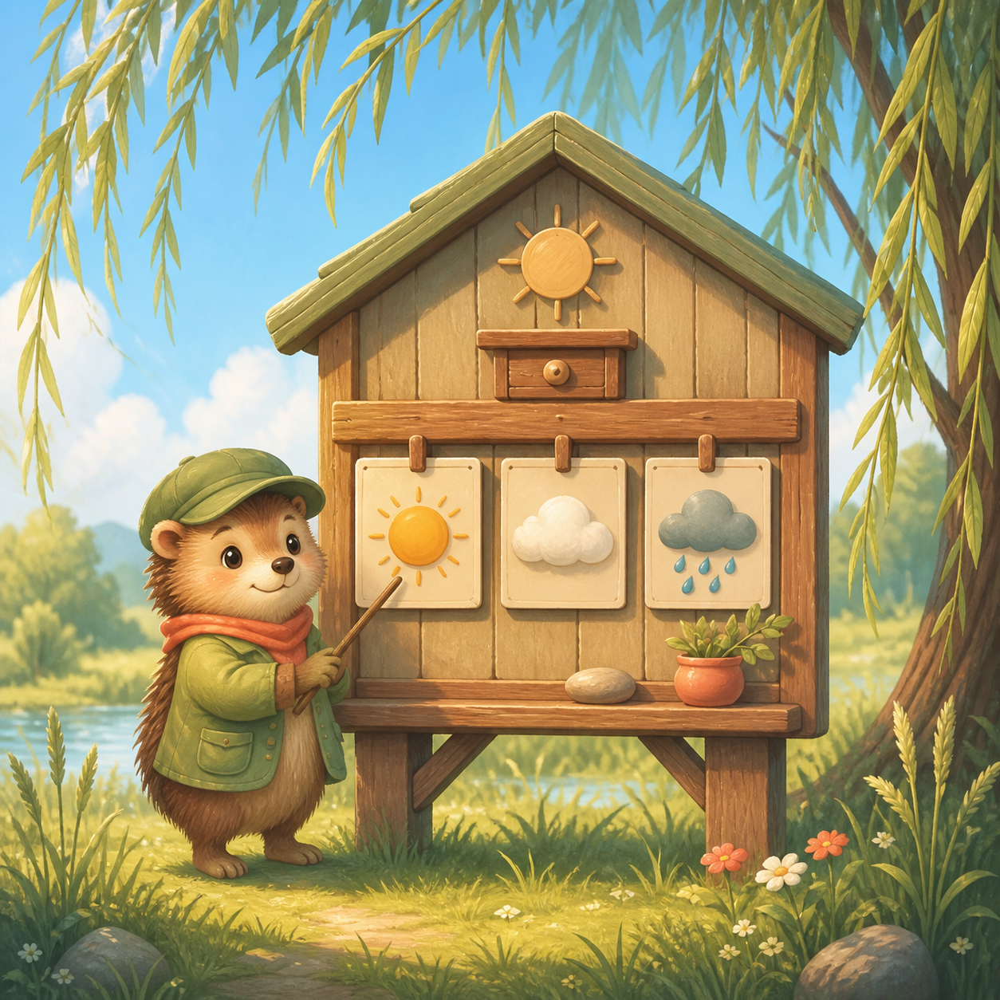

Willow weather station
Weather Watch
Read three sky signs, predict the next one, and open a safe shelter window for each animal.
Three forecasts · three shelter windows
Forecast notebook
Choose a forecast
Forecast
Dawn meadow
Forecast settled